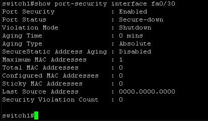
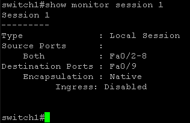

In these next two labs, I dig out some older Cisco Catalyst 2950 and Cisco Catalyst 3550 switches I've had sitting around, and demonstrate basic, managed switch configuration and administration. These are some fairly older models going back to the early 2000's. But is good for practicing and building up some basic switch management skills.
In this lab environment, I'm using a serial DB-9 to console port cable to connect the Cisco Catalyst switches to a Windows machine to operate them using PuTTY.
Here in the PuTTY interface, I'm opening a management session with the switch, via Serial connection COM1:

Performing a factory reset on a Cisco Catalyst 2950 switch to reconfigure it from scratch.
To start, I'm going to carry out the following steps on the Cisco Catalyst 2950 switch to enter ROMMON mode:
switch: prompt appear in your console session (PuTTY).This procedure interrupts the normal boot process and forces the switch into the boot loader environment (ROMMON):
Once the switch is in ROMMON mode, I'm going to run the following commands to initiate the factory reset.
flash_init - Initializes the flash file system to access and manipulate files (like configs or VLAN data).
del flash:config.text - Delete the startup configuration file.
del flash:vlan.dat - Deletes the VLAN database file.

Enter in the boot command to complete the factory reset.

The IOS (Internetwork Operating System) image is being loaded from flash memory.
The swtitch then initializes the flash file system again after loading the IOS.
This prepares the switch to access the saved files (e.g., new configs, logs, VLAN database).
It's one of the final steps before the switch reaches the interactive CLI or setup prompt.

Here the switch is in the final phase of booting up after issuing the boot command.
The completion of the Cisco IOS boot process after a factory reset.

Here, the system info is being displayed and is now waiting for the prompt.

From here, the switch will prompt for different configurations to set it up from scratch.
After the switch is factory reset it'll go into the System Configuration Dialog (setup Wizard) of the Cisco Catalyst 2950.
Below in this example, I'm going to setup the switches hostname to MT0.

Here, the password is being set Enable Secret prompt.
This is the primary secure password for accessing privileged EXEC mode (MT0#)
The enable secret is stored in encrypted form in the config.

In this example, I'm going to enter in no for SNMP Network Management. Typically this would be setup in production environments.

From there we get an interface summary.

After reviewing the interface summary, the switch prompts you to enter the interface used for network management.
Important: This is not asking for a physical interface like FastEthernet0/1.
Instead, it's asking you to specify a Switched Virtual Interface (SVI) - typically vlan1.
This tells the switch you want to assign an IP address to VLAN 1.
Which is the default management VLAN used on most Cisco Layer 2 switches (like the Catalyst 2950).
This step is critial - it gives the switch a Layer 3 address so it can be remotely managed over the network via Telnet, SSH, SNMP, or just to test connectivity via ping.


After assigning an IP address to VLAN 1, the setup wizard prompts you to optionally enable cluster management:
Cluster Command Switching is a legacy Cisco feature that allows one switch - called the Cluster Command Switch (CCS):
To manage a group of other nearby member switches using Cisco Discovery Protcol (CDP).
Note: Cluster management isn't often used in modern production environments and has been largely replaced, by tools such as Cisco Prime Infrastructure, DNA Center, or other centralized configurations.
In this example, I'm going to enter in yes and enter the specified cluster name when prompted.

Once you complete the Cisco Setup Wizard, the switch presents a preview of the configuration it's about to apply based on your responses.
This step is the final review before saving the configuration to NVRAM.
If everything looks correct, the next prompt will ask whether you'd like to save this configuration so it's retained after a reboot.


After previewing the full configuration script, the Cisco Setup Wizard prompts you to choose what to do next:
In this example, I'm going to enter in 2 to save the configuration to NVRAM (startup-config) and exit to the command prompt.

After choosing to save the configuration, the switch writes the configuration to NVRAM and exits the setup wizard.
A message might come up that indicates the line protocol on vlan1 is down.
This simply means that there are no physical ports assigned to VLAN 1 are currently connected or active - a normal occurrence in lab setups.
Once a device is connected to a port in VLAN1, the interface will automatically come up.

After the switch writes the configurations to NVRAM and reboots it'll prompt to Press RETURN to get started:.
Upon pressing enter it'll show the switch prompt > followed by the hostname of thw switch.

After exiting the setup wizard and reaching the CLI, you're placed in User EXEC Mode (prompt ends in >), which provides limited read-only access.
To begin managing the switch, type enable

This command elevates you to Privileged EXEC mode (prompt ends in #)
Where you can issue high-level diagnostic commands to enter configuration mode to make changes.
Once you're in Privileged EXEC Mode,
MT0#, the command configure terminal or shortcut conf t takes you into Global Configuration Mode.


Once in Global Configuration Mode, one of the first things that can be done is changing the hostname of the switch.
In this example, I'll specify the new hostname to be switch1.


Here, I'll setup and example banner to demonstrate the feature.
MOTD - Message of the Day banners are used to display a login message.
This is useful for compliance, legal disclaimers, or basic identification of the device's role on the network.
In this example, I'll specify the banner as "#CENTRAL SWITCH"#

Setting this configuration sets it up for anyone who connects to the switch via the console port must enter a password.
This feature is intended to prevent unauthorized physical access to the switch CLI via the console port.
It's a basic, yet essential security measure to prevent unauthorized physical access to switch settings.

Here, we have finalized the basic management setup of the Cisco Catalyst 2950.
Securing the local (console) and remote (VTY/Telnet) acess with passwords, assigned an IP address to VLAN interface for management access, and configured a default gateway so the switch can communicate with devices outside the subnet.

Here, I've configured the ports Fa0/40-48 as access ports for end user devices.
In this example, these ports are assigned to VLAN 20 and configured with descriptions for clarity.
The spanning-tree portfast is enabled to improve connection time for connected workstations.

From there, type in exit, end, back to Privileged EXEC Mode and enter in write memory.

To get started with creating and configuring VLANs we need to first access Global Configuration Mode from Privileged EXEC Mode.
In this example, two VLANS: VLAN 10 (Lab-1) and VLAN 20 (Lab-2) are created.
VLANs allow you to segment the switch into multiple logical networks, even though all device are physically connected to the same hardware.
Naming the VLANs helps with organization and troulbeshooting.

In this step, physical switch ports to VLAN 10 and 20 using the interface range command.
Descriptions are added to document their roles.
After entering in the changes, save the configuration to NVRAM using write memory to make the setup persistent.
After assigning ports to VLANs and saving the configuration, the command show vlan brief is used to confirm that every is correctly set up.

In this example, port security is configured on interfacefa0/30 to restrict access to a single trusted device.
If another device attempts to connect, the switch will shut down the port as a security measure.
Enabling sticky MAC learning allows the switch to dynamically remember the allowed device.
Port security is a critical feature for preventing unauthorized devices on edge ports in secure environments.
After configuring port security, you can use the following command to verify the status and behavior of a specific port:
show port-security interface fa0/1
Note: The Secure-down doesn't necessarily mean an error - it can just be nothing is plugged into the port.
When a device connects and a MAC is learned, this will change to Secure-up.
If an unauthorized device connects, the port will be shutdown and a violation count will increment.
Monitoring the network traffic that is passing through the switch can be implemented for various scenarios.
Whether it's monitoring and analyzing the security of the network, troubleshooting network communications, analyzing what protocols are in use across endpoints, etc.
Here, I'm going to demonstrate setting up and configuring a basic
SPAN - Switch Port Analyzer source and destination port on the switch.
To gather the network traffic from each endpoint connected to the specified port range.
Setting this up configures a SPAN session.
To mirror traffic from several source interfaces to one destination interface for monitoring purposes.

This step verifies that SPAN session 1 is actively monitoring the correct source and destination interfaces.
In this SPAN port configuration setup, I have two Windows PCs, connected to fa0/5 - 192.168.1.104 and fa0/7 - 192.168.1.124
Along with another Windows PC running Wireshark plugged into the destination port fa0/9 to collect the network traffic of the devices connected to these interfaces.